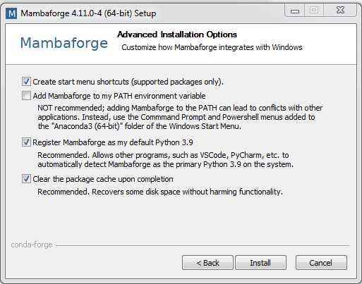

Installing Python on your computer#
 This chapter contains some instructions about how to install Python on your personal computer.
This chapter contains some instructions about how to install Python on your personal computer.
There are many ways to install Python on your computer (and while most of them work, some of them are less practical than others for scientific applications). Unless you know what you are doing (i.e.: you have been doing this before), please follow these instructions exactly.
Important! What to do if you already have python installed on your laptop
If you already have anaconda / conda / miniconda installed:
You can keep your installation if it works for you. If you want to start from scratch, uninstall anaconda and start again as explained below.
If you don’t know what I’m talking about:
Then you should probably follow the instructions below.
Important! For Windows 7 users
Windows 7 is not supported since January 2020. It seems that you can’t install mambaforge on Windows 7. Regardless of python, I strongly recommend to update to a version with security updates.
Install Miniconda#
On Windows#
Go to the miniforge download website: conda-forge/miniforge
Download the installers for Mambaforge and your operating system (Windows, Mac OS or Linux).
Unless you have an uncommon architecture (unlikely), you should choose the x86_64 files.
{kind=link}
Double-click the .exe file.
Follow the instructions on the screen.
If you are unsure about any setting, accept the defaults. You can change them later. At this stage, I recommend:
{kind=link}
On Mac OS and Linux#
For these platforms, no need to download the files yourself. Open a terminal and do:
curl -L -O "https://github.com/conda-forge/miniforge/releases/latest/download/Mambaforge-$(uname)-$(uname -m).sh"
bash Mambaforge-$(uname)-$(uname -m).sh
or, if this doesn’t work:
wget "https://github.com/conda-forge/miniforge/releases/latest/download/Mambaforge-$(uname)-$(uname -m).sh"
bash Mambaforge-$(uname)-$(uname -m).sh
The first command downloads the tool, and the second installs it. Follow the prompts on the installer screens.
If you are unsure about any setting, accept the defaults except for the last question asking you if you wish to run conda init: here, answer “yes”.
To make the changes take effect, close and then re-open your terminal window.
Testing your installation#
To see if everything worked well, open a terminal (Mac and Linux). On Windows, open the miniforge prompt (from the Start menu, search for and open “miniforge prompt”):
{kind=link}
and type in:
mamba list
You should see a long list of package names.
If you type:
python
A new python prompt should appear, with something like:
Python 3.9.7 | packaged by conda-forge | (default, Sep 29 2021, 19:15:42) [MSC v.1916 64 bit (AMD64)] on win32
Type "help", "copyright", "credits" or "license" for more information.
>>>
You can type exit() to get out of the python interpreter.
Optional: conda, mamba, conda-forge?
Although the instructions above should work in almost all situations and should get you ready for the class, I should explain what we have just done in case you are interested or if you google:
We have just installed miniconda which is a minimal installer for the larger project Anaconda. Anaconda is a scientific Python installation which, in my opinion, has too many options and tools that you won’t need.
But we haven’t installed miniconda only: we have also set some options per default automatically:
we now use conda-forge as default channels to download the python packages we will use later in the lecture (instead of anaconda channels).
we now use mamba as the default python package install tool (instead of
conda).mamba installbehaves exactly likeconda install, but is significantly faster.
What is this python “interpreter”?#
Start with reading the definition from the Tech Terms Dictionary.
Put simple, the python interpreter is a program executing python programs or commands. It reads the programs you write and executes the instructions they contain. We will look into interpreters in a little more detail later in the semester, when we will talk about compiled and interpreted languages.
What is a “python installation”?#
Explanation for windows users : the difference between the command prompt, the miniforge prompt, and the python interpreter
Explanation for linux/mac users
: what did mambaforge do to your terminal?
Learning checklist#